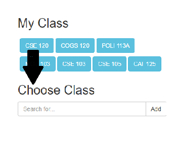
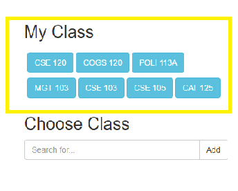

This is the general user guide to help our Groupers!
Before joining any group, you need to have your classes selelected. You can search for your classes using the search bar below. Your classes will be added automatically.
This is a list of your saved classes. If you click on the subject, it will direct you to the class page. From the class page, you can see the full list of groups associated.
There are two different lists for the group: one type is IN-PERSON and the other is ONLINE. If you click a group from IN-PERSON, it will show you information about group meetings. If you choose ONLINE instead, it will go to the form pages.
If you do not like groups already formed, you can always create one yourself by clicking CREATE GROUP button at the bottom!